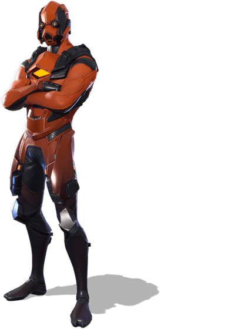
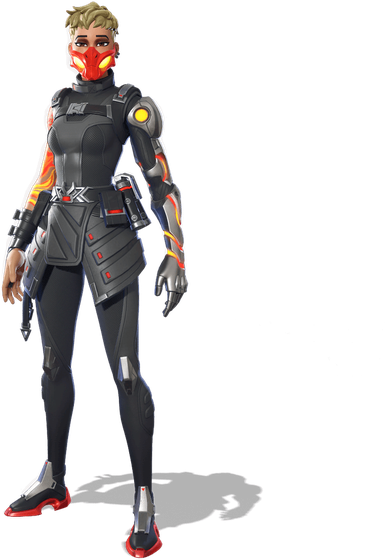

2,000 V-BucksVertex
A vintage classic from 2018: "From beyond the point of no return." Sleek, simple and still one of the coolest outfits in the game.
 800 V-Bucks
800 V-Bucks7-Ball
"The game is everything." Bold design, and only 800 V-Bucks for an Epic outfit. Strong value.

800 V-BucksVoltaria
"Keep your eye on the prize." A sharp warrior look for an Epic-rarity bargain. Leaves very soon.